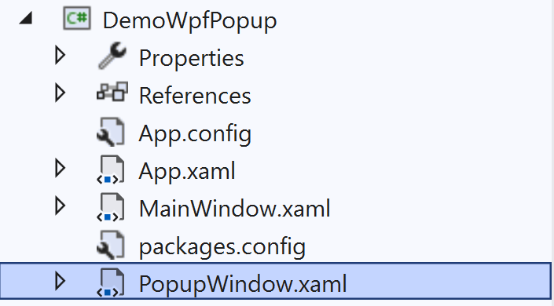
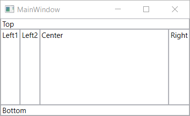
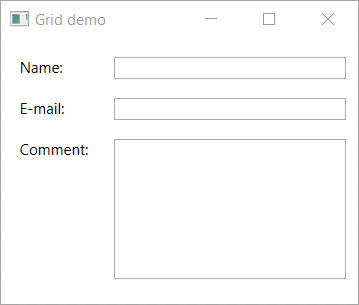
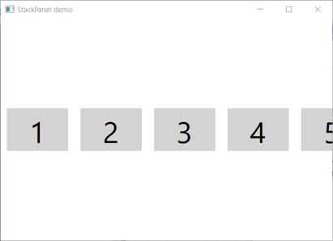
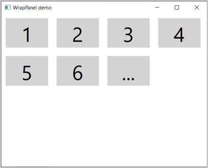
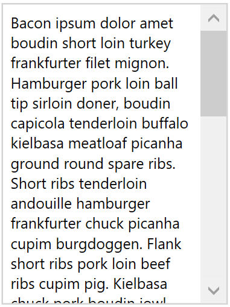
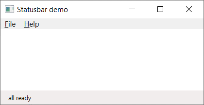
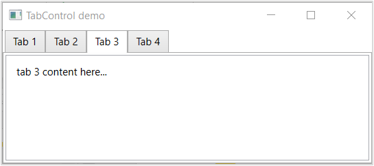

Youtube: WPF layout
Vensters
Een nieuw WPF project heeft standaard een 800x450 Window (met daarin een Grid control):
<Window x:Class="WpfTest.MainWindow"
xmlns="http://schemas.microsoft.com/winfx/2006/xaml/presentation"
xmlns:x="http://schemas.microsoft.com/winfx/2006/xaml"
xmlns:d="http://schemas.microsoft.com/expression/blend/2008"
xmlns:mc="http://schemas.openxmlformats.org/markup-compatibility/2006"
xmlns:local="clr-namespace:WpfTest"
mc:Ignorable="d"
Title="MainWindow" Height="450" Width="800">
<Grid>
</Grid>
</Window>
Properties en methodes
| Property | Omschrijving |
|---|---|
Height |
hoogte van het venster |
MaxHeight |
maximumhoogte van het venster (indien herschaalbaar) |
MaxWidth |
maximumbreedte van het venster (indien herschaalbaar) |
MinHeight |
minimumhoogte van het venster (indien herschaalbaar) |
MinWidth |
minimumbreedte van het venster (indien herschaalbaar) |
ResizeMode |
hoe kan het venster herschalen, b.v. niet herschaalbaar: NoResize, CanResize... |
Title |
titel in de titelbalk bovenaan |
Width |
breedte van het venster |
WindowStyle |
stijl van het venster, b.v. vereenvoudigd venster: ToolWindow |
| Property | Omschrijving |
|---|---|
Open() |
open een venster |
Close() |
sluit een venster |
Voorbeelden
Minimum en maximum afmetingen
Beperk de afmetingen met Width, Height, MinWidth, MinHeight, MaxWidth en MaxHeight:
<Window x:Class="WpfTest.MainWindow"
...
Title="Test Window" Height="250" Width="400" MinHeight="250" MinWidth="400" MaxHeight="450" MaxWidth="800">
<Grid>
</Grid>
</Window>
Niet herschaalbaar maken
Niet herschaalbaar venster met ResizeMode="NoResize":
<Window x:Class="WpfTest.MainWindow"
...
Title="Test Window" Height="250" Width="400" ResizeMode="NoResize">
<Grid>
</Grid>
</Window>
Vereenvoudigd
Maak een vereenvoudigd venster zonder icoon linksboven of minimize knoppen rechtsboven met WindowStyle="ToolWindow":
<Window x:Class="WpfTest.MainWindow"
...
Title="Test Window" Height="250" Width="400" Height="250" Width="400" WindowStyle="ToolWindow">
<Grid>
</Grid>
</Window>

Nieuw openen
Een nieuw venster openen kan met de Show() methode. Nemen we als voorbeeld een PopupWindow; voeg het toe aan je project via rechtermuisknop add, Window...:

Voeg dan b.v. een Button toe aan MainWindow, waaromee je de PopupWindow opent:
<Window x:Class="WpfTest.MainWindow" ...>
<Grid>
<Button Padding="10,5" Content="open popup" Click="BtnOpenPopup_Click" .../>
</Grid>
</Window>
De event handler in code-behind:
private void BtnOpenPopup_Click(object sender, RoutedEventArgs e)
{
new MyPopupWindow().Show();
}
Voor de popup window is een niet herschaalbaar vereenvoudigd venster ideaal:
<Window x:Class="WpfTest.PopupWindow" Height="150" Width="300" WindowStyle="ToolWindow" ResizeMode="NoResize" ...>
<Grid>
</Grid>
</Window>
Je kan bij het openen gegevens als b.v. gebruikersnaam meegeven van MainWindow naar PopupWindow door de constructor van die laatste uit te breiden met een parameter.
In PopupWindow.xaml.cs:
public MyPopupWindow(string name) // breid uit met "name" parameter
{
InitializeComponent();
lblWelcome.Content = $"hello {name}";
}
In MainWindow.xaml.cs:
private void BtnOpenPopup_Click(object sender, RoutedEventArgs e) {
new MyPopupWindow("Rogier").Show(); // geef waarde voor "name" mee
}
Sluiten
Maak b.v. een button om het venster te sluiten
<Button Content="sluiten" Click="BtnClose_Click" .../>
De event handler in code-behind:
private void BtnClose_Click(object sender, RoutedEventArgs e)
{
this.Close();
}
Positionering van controls
Margin en Padding
Slepen we in designer een Button control op de grid, en voegen we wat Padding toe:
<Grid>
<Button Content="Button" Margin="35,48,10,20" Padding="10,5,10,5" HorizontalAlignment="Left" VerticalAlignment="Top" />
</Grid>
- de
Paddingbepaalt de ruimte binnen de control, dus tussen tekst en rand - de
Marginbepaalt de ruimte buiten de control, hier links en boven tot de<Grid>
VerticalAlignment en HorizontalAlignment
De attributen VerticalAlignment en HorizontalAlignment bepalen hoe de control gepositioneerd wordt t.o.v. de parent. Als afstanden worden de marges genomen. Stel je ze b.v. in op Right resp. Bottom, dan worden de rechter- en onderwaarden van Margin genomen:
<Grid>
<Button Content="Button" Margin="35,48,10,20" Padding="10,5" HorizontalAlignment="Right" VerticalAlignment="Bottom" />
</Grid>
De standaardwaarden voor VerticalAlignment en HorizontalAlignment zijn Stretch, dus als je het weglaat wordt de control uitgerokken, b.v. VerticalAlignment weglaten rekt verticaal uit:
<Grid>
<Button Content="Button" Margin="35,48,10,20" Padding="10,5" HorizontalAlignment="Left" />
</Grid>VerticalAlignment en HorizontalAlignment voor elke control!
VerticalContentAlignment en HorizontalContentAlignment
De attributen VerticalContentAlignment en HorizontalContentAlignment bepalen de alignering van de content van de control. De XAML voor twee tekstvakken, verticaal gecentreerd en horizontaal links resp. rechts:
<TextBox Text="tekst links..." HorizontalContentAlignment="Left" VerticalContentAlignment="Center" ... />
<TextBox Text="tekst rechts..." HorizontalContentAlignment="Right" VerticalContentAlignment="Center"... />

WPF panels
overzicht
| Control | Omschrijving | Voorbeeld |
|---|---|---|
| Canvas | positionering met coördinaten, al dan niet overlappend |  |
| DockPanel | control waarbinnen panels aan de vier zijden gedocked ("gekleefd") kunnen worden |  |
| Grid |
rijen en kolommen waarbinnen controls geplaatst worden goede controle over breedtes/hoogtes rijen en kolommen goede controle over positionering items binnen de cellen |
 |
| StackPanel |
eenvoudige stapeling per rij of kolom zonder wrapping alle items worden tegen elkaar gestapeld, dus "spreiden" is niet mogelijk |
 |
| WrapPanel | als StackPanel, maar met wrapping |
 |
Canvas
Canvas wordt hoofdzakelijk gebruikt om (vooral grafische) elementen een vaste plaats te geven. De positie bepaal je met de properties Canvas.Left, Canvas.Top enz...; voor de stapelvolgorde gebruik je Canvas.ZIndex. Een voorbeeld:
<Canvas Name="cvCanvas">
<Ellipse Fill="Gainsboro" Canvas.Left="25" Canvas.Top="25" Width="200" Height="200" Panel.ZIndex="1" />
<Rectangle Fill="LightBlue" Canvas.Left="87" Canvas.Top="40" Width="50" Height="50" Panel.ZIndex="3" />
<Rectangle Fill="LightCoral" Canvas.Left="50" Canvas.Top="50" Width="50" Height="50" Panel.ZIndex="4" />
<Rectangle Fill="LightCyan" Canvas.Left="74" Canvas.Top="75" Width="100" Height="100" Panel.ZIndex="2" />
</Canvas>
DockPanel
Docking is een term gebruikt voor waar en hoe child elements “plakken” in een venster dat van grootte kan veranderen. Een DockPanel wordt typisch gebruikt voor de globale layout van een Windows venster. Een voorbeeld:
<DockPanel LastChildFill="True"> <!-- LastChildFill: laatste element vult resterende middenruimte -->
<TextBox DockPanel.Dock="Top" Text="Top" />
<TextBox DockPanel.Dock="Bottom" Text="Bottom" />
<TextBox DockPanel.Dock="Left" Text="Left1" />
<TextBox DockPanel.Dock="Left" Text="Left2" />
<TextBox DockPanel.Dock="Right" Text="Right" />
<TextBox Text="Center" AcceptsReturn="True" TextWrapping="Wrap" />
</DockPanel>
Grid
Bij Grid kan je een grid van rijen en kolommen definiëren met Grid.ColumnDefintions en Grid.RowDefinitions. Daarna plaats je elementen in de juiste rij/kolom met Grid.Row en Grid.Column.
<Grid Margin="10">
<Grid.ColumnDefinitions>
<ColumnDefinition Width="80" />
<ColumnDefinition Width="*" />
</Grid.ColumnDefinitions>
<Grid.RowDefinitions>
<RowDefinition Height="Auto" />
<RowDefinition Height="Auto" />
<RowDefinition Height="*" />
</Grid.RowDefinitions>
<Label>Name:</Label>
<TextBox Grid.Column="1" Margin="0,5,0,10" />
<Label Grid.Row="1">E-mail:</Label>
<TextBox Grid.Row="1" Grid.Column="1" Margin="0,5,0,10" />
<Label Grid.Row="2">Comment:</Label>
<TextBox Grid.Row="2" Grid.Column="1" Margin="0,5,0,10" AcceptsReturn="True" />
</Grid>
De Width waarden van kolommen worden als volgt verwerkt (hetzelfde principe geldt voor Height waarden van rijen):
- teken eerst kolommen met vaste breedtes
- teken dan kolommen met breedte
Auto, waarbij ze niet meer ruimte innemen dan hun content nodig heeft - verdeel de resterende waarden proportioneel; als er b.v. twee kolommen
2*en3*zijn, krijgt de eerste kolom 2/5 en de tweede 3/5
| Voorbeeld | Betekenis | Anders gezegd... |
|---|---|---|
Width="80" |
exact 80 px breed | vaste waarde |
Width="Auto" |
neem niet meer ruimte dan nodig | fit content |
Width="3*" |
neemt een gewicht 3 | resterende ruimte |
Width="*" (standaardwaarde) |
is hetzelfde als Width="1*" |
resterende ruimte |
StackPanel
Bij StackPanel stapel je controls in één rij of kolom:
<StackPanel Orientation="Horizontal">
<TextBlock FontSize="48" Width="100" Height="70" TextAlignment="Center" Background="LightGray" Margin="10,10,10,10">1</TextBlock>
<TextBlock FontSize="48" Width="100" Height="70" TextAlignment="Center" Background="LightGray" Margin="10,10,10,10">2</TextBlock>
<TextBlock FontSize="48" Width="100" Height="70" TextAlignment="Center" Background="LightGray" Margin="10,10,10,10">3</TextBlock>
<TextBlock FontSize="48" Width="100" Height="70" TextAlignment="Center" Background="LightGray" Margin="10,10,10,10">4</TextBlock>
<TextBlock FontSize="48" Width="100" Height="70" TextAlignment="Center" Background="LightGray" Margin="10,10,10,10">5</TextBlock>
<TextBlock FontSize="48" Width="100" Height="70" TextAlignment="Center" Background="LightGray" Margin="10,10,10,10">6</TextBlock>
<TextBlock FontSize="48" Width="100" Height="70" TextAlignment="Center" Background="LightGray" Margin="10,10,10,10">...</TextBlock>
</StackPanel>
Om verticaal te stapelen gebruik je Orientation="Vertical":
<StackPanel Orientation="Vertical">
...
</StackPanel>
WrapPanel
Bij WrapPanel stapel je elementen in meerdere rijen of kolommen:
<WrapPanel>
<TextBlock FontSize="48" Width="100" Height="70" TextAlignment="Center" Background="LightGray" Margin="10,10,10,10">1</TextBlock>
<TextBlock FontSize="48" Width="100" Height="70" TextAlignment="Center" Background="LightGray" Margin="10,10,10,10">2</TextBlock>
<TextBlock FontSize="48" Width="100" Height="70" TextAlignment="Center" Background="LightGray" Margin="10,10,10,10">3</TextBlock>
<TextBlock FontSize="48" Width="100" Height="70" TextAlignment="Center" Background="LightGray" Margin="10,10,10,10">4</TextBlock>
<TextBlock FontSize="48" Width="100" Height="70" TextAlignment="Center" Background="LightGray" Margin="10,10,10,10">5</TextBlock>
<TextBlock FontSize="48" Width="100" Height="70" TextAlignment="Center" Background="LightGray" Margin="10,10,10,10">6</TextBlock>
<TextBlock FontSize="48" Width="100" Height="70" TextAlignment="Center" Background="LightGray" Margin="10,10,10,10">...</TextBlock>
</WrapPanel>
Je kan ook stapelen van rechts naar links met FlowDirection="RightToLeft", maar dat zijn de enige aligneermogelijkheden. Items centraal plaatsen of ver uit elkaar zetten kan bijvoorbeeld niet, zoals met CSS FlexBox wel kan. Voor complexere layouts gebruik je best altijd Grid.
Om verticaal te stapelen gebruik je Orientation="Vertical":
<WrapPanel Orientation="Vertical">
...
</WrapPanel>

UI componenten
overzicht
| Control | Omschrijving | Voorbeeld |
|---|---|---|
| Menu | een klassiek Windows menu |  |
| ScrollViewer | voeg scrollbars toe aan panels en andere controls |  |
| StatusBar | een statusbar onderaan het venster |  |
| Tabcontrol | een control met tabs |  |
Menu
Een menu bouw je met Menu en MenuItem controls, typisch in combinatie met een DockPanel:
<DockPanel LastChildFill="True">
<Menu DockPanel.Dock="Top">
<MenuItem Header="_File">
<MenuItem Header="_Open..." />
<MenuItem Header="_Save" />
<MenuItem Header="Save _As..." />
<Separator />
<MenuItem Header="E_xit" Click="ExitItem_Click" />
</MenuItem>
<MenuItem Header="_Help">
<MenuItem Header="_About" />
</MenuItem>
</Menu>
<Grid></Grid>
</DockPanel>
→ de underscore in de XAML duidt aan welke letter als shortcut gebruikt wordt
Voorbeeld van een event handler voor het exit menu item:
private void ExitItem_Click(object sender, RoutedEventArgs e)
{
// 0 wilt zeggen dat er niets is fout gelopen
Environment.Exit(0);
}
ScrollViewer
Sommige controls als ListBox hebben van zichzelf scrollbars, sommige controls als TextBox of panels niet. Ze scrollbars geven doe je — misschien wat vreemd — niet met een property, maar met een ScrollViewer control:
- wrap de control in een
<ScrollViewer> ... </ScrollViewer> - verhuis layout properties als
Height,HorizontalAlignment,Margin,VerticalAlignment,Widthenz... van de control naar deScrollViewer
Een TextBox zonder scrollbars:
<TextBox
x:Name="txt1"
AcceptsReturn="True"
Height="150"
HorizontalAlignment="Left"
Margin="35,39,0,0"
Padding="20,10,20,30"
Text="Bacon ipsum dolor amet prosciutto tail fatback, pancetta sausage meatball swine rump salami pig alcatra ..."
TextWrapping="Wrap"
VerticalAlignment="Top"
Width="200"
/>

Dezelfde TextBox met scrollbars:
<ScrollViewer
Height="150"
HorizontalAlignment="Left"
Margin="35,39,0,0"
VerticalAlignment="Top"
Width="200">
<TextBox
x:Name="txt1"
AcceptsReturn="True"
Padding="20,10,20,30"
Text="Bacon ipsum dolor amet prosciutto tail fatback, pancetta sausage meatball swine rump salami pig alcatra ..."
TextWrapping="Wrap"
/>
</ScrollViewer>
StatusBar
Een StatusBar gebruik je typisch in combinatie met een DockPanel, onderaan gedocked:
<DockPanel LastChildFill="True">
...
<StatusBar DockPanel.Dock="Bottom">
<StatusBarItem Padding="10,5">
<TextBlock Text="all ready" FontSize="10" />
</StatusBarItem>
</StatusBar>
<Grid></Grid>
</DockPanel>
TabControl
Een TabControl voorbeeld:
<TabControl SelectedIndex="2" >
<TabItem Header="Tab 1" Margin="0" Padding="10,5">
<TextBox Padding="10">tab 1 content here...</TextBox>
</TabItem>
<TabItem Header="Tab 2" Margin="0" Padding="10,5">
<TextBox Padding="10">tab 2 content here...</TextBox>
</TabItem>
<TabItem Header="Tab 3" Margin="0" Padding="10,5">
<TextBox Padding="10">tab 3 content here...</TextBox>
</TabItem>
<TabItem Header="Tab 4" Margin="0" Padding="10,5">
<TextBox Padding="10">tab 4 content here...</TextBox>
</TabItem>
</TabControl>